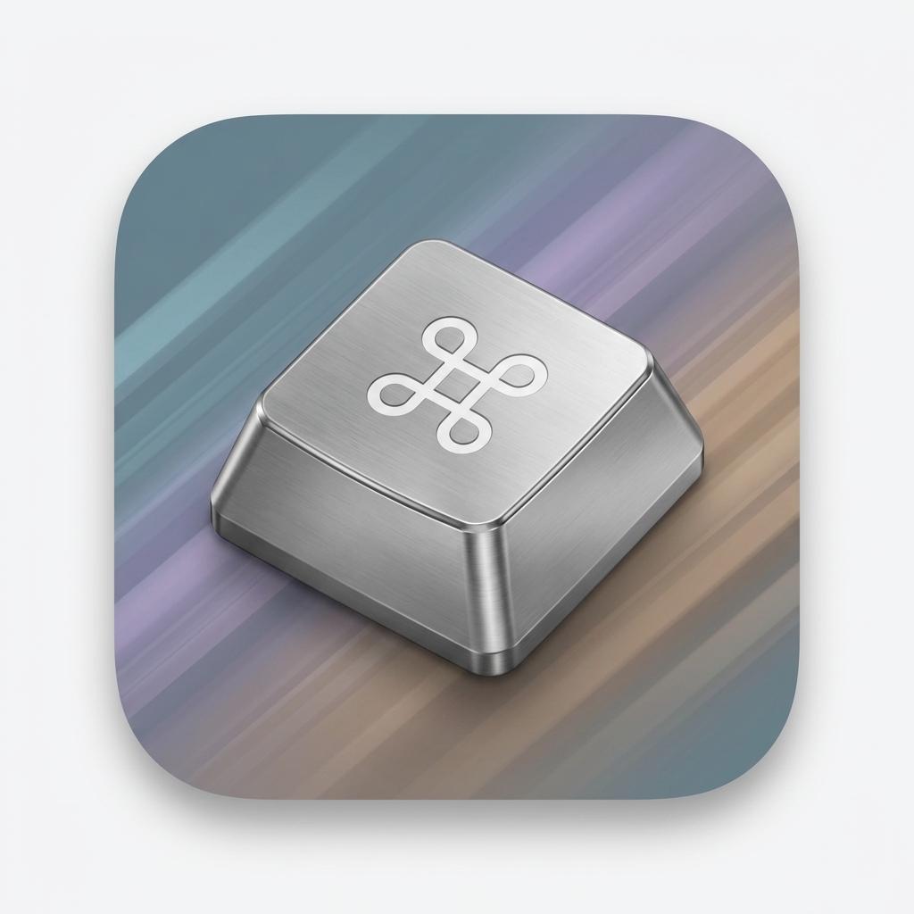
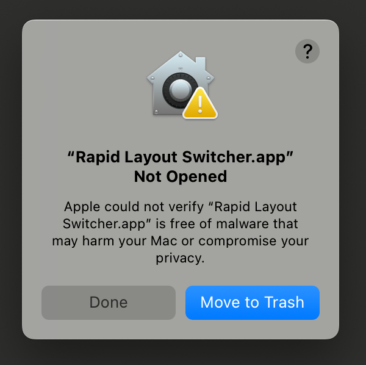
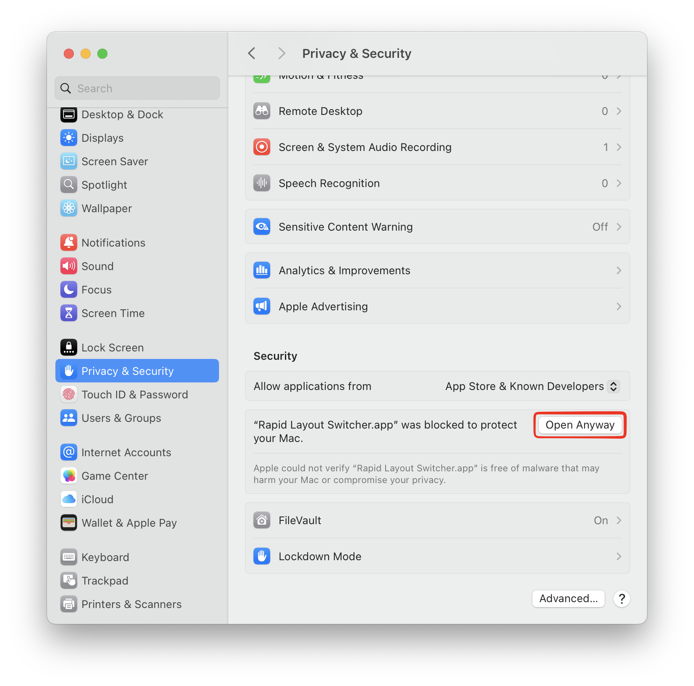
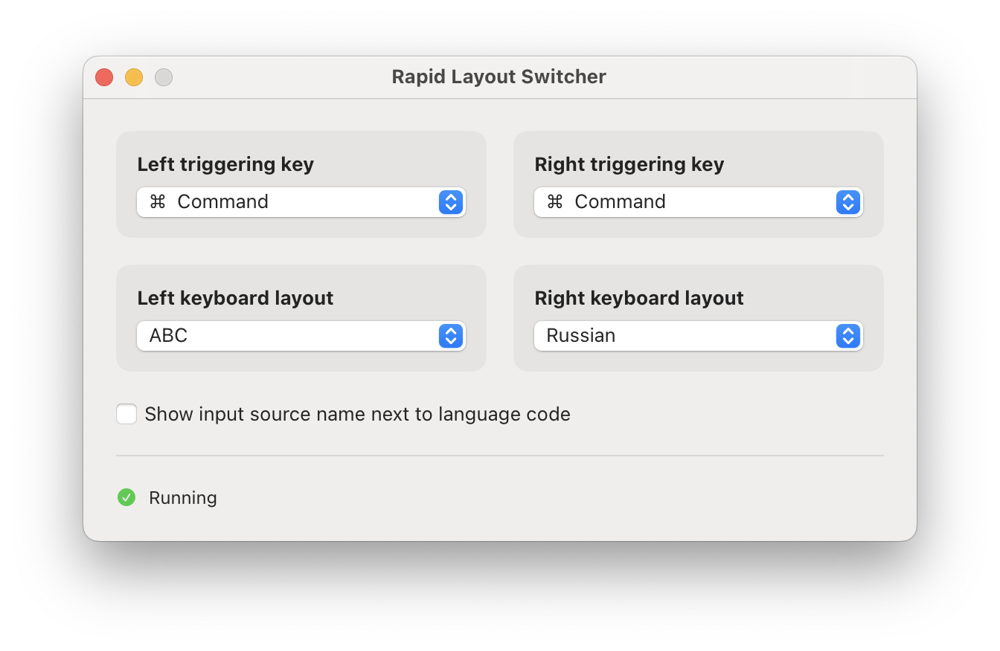

Your layouts
Works with the input sources already enabled in macOS System Settings.

Your next keyboard layout is one tap away.
Download for macOSFree · macOS 15.7+ · Apple silicon and Intel
First launch
Rapid Layout Switcher is built with a free Apple developer account, so it cannot be notarized. macOS will show a security warning the first time you open it. If you downloaded the app from this site, follow these steps:
When the warning appears, click Done.

Open System Settings → Privacy & Security, scroll to Security, and click Open Anyway. Confirm Open when prompted.

Switch without breaking your flow
Assign one keyboard layout to a left-side modifier and another to its right-side twin. Tap the key by itself to switch instantly. Hold it for a regular shortcut—everything keeps working as expected.
Set it once
Pick a trigger and layout for each side, then close the window. Rapid Layout Switcher stays quietly in your menu bar and shows the language you are using.

Works with the input sources already enabled in macOS System Settings.
See the current language at a glance and launch the app at login.
Listen-only monitoring. No keystrokes stored, no scripts, and no Accessibility access.